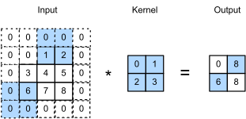

Convolution#
:label:ch_conv
The convolution (CONV) operator is the one of the most expensive and popular operators in neural networks. In this section, we will cover the operator with single input and output channels. Please refer to chapter 6.2, 6.3, and 6.4 in D2L for more explanation about this operator. Here we would not explain much about the convolution-related terms such as padding, channel, stride, convolution kernel, etc.
import d2ltvm
import numpy as np
import tvm
from tvm import te
Padding#
As a prerequisite to convolution, let’s first implement padding, which visually surrounds the targeting tensor with a “shell” surrounding it. The padding values are normally 0. Note that we briefly touched padding in :numref:ch_all_any when introducing te.any, which was a padding for a 2-D matrix.
Here we generalize the padding to work for 2-D convolution on \(n\)-D tensors, which is usually used in the convolution operators of neural networks. In the general case, we assume the last two dimensions are rows and columns, 0s are only padded on these two dimensions. In particular, if the matrix height (i.e. number of rows) is \(n_h\) and width (i.e. number of columns) is \(n_w\), then we will pad \(p_h\) rows with 0s on top and bottom, and \(p_w\) columns with 0s on left and right to make its height and width to \(n_h+2p_h\) and \(n_w+2p_w\), respectively. We have mentioned it once in :numref:ch_shapes, but again note that *X and *i in te.compute are used to represent general multi-dimensional tensors.
# Save to the d2ltvm package.
def padding(X, ph, pw, val=0):
"""Pad X with the given value in 2-D
ph, pw : height and width padding
val : padding value, default 0
"""
assert len(X.shape) >= 2
nh, nw = X.shape[-2], X.shape[-1]
return te.compute(
(*X.shape[0:-2], nh+ph*2, nw+pw*2),
lambda *i: te.if_then_else(
te.any(i[-2]<ph, i[-2]>=nh+ph, i[-1]<pw, i[-1]>=nw+pw),
val, X[i[:-2]+(i[-2]-ph, i[-1]-pw)]),
name='PaddedX')
Verify the results for a 3-D tensor.
A = te.placeholder((2,3,4))
B = padding(A, 1, 2)
s = te.create_schedule(B.op)
mod = tvm.build(s, [A, B])
a = tvm.nd.array(np.ones((2,3,4), dtype='float32'))
b = tvm.nd.array(np.empty((2,5,8), dtype='float32'))
mod(a, b)
print(b)
[[[0. 0. 0. 0. 0. 0. 0. 0.]
[0. 0. 1. 1. 1. 1. 0. 0.]
[0. 0. 1. 1. 1. 1. 0. 0.]
[0. 0. 1. 1. 1. 1. 0. 0.]
[0. 0. 0. 0. 0. 0. 0. 0.]]
[[0. 0. 0. 0. 0. 0. 0. 0.]
[0. 0. 1. 1. 1. 1. 0. 0.]
[0. 0. 1. 1. 1. 1. 0. 0.]
[0. 0. 1. 1. 1. 1. 0. 0.]
[0. 0. 0. 0. 0. 0. 0. 0.]]]
Convolution#
We consider the simple single-channel convolution first. Given an \(n_h\times n_w\) data matrix \(X\), we first pad 0s into \((n_h+2p_h) \times (n_w+2p_w)\). If the kernel matrix \(K\) has a size of \(k_h\times k_w\), using a stride \(s_h\) for height and \(s_w\) for width, the output \(Y = X \star K\) will have a shape
And the element of \(Y\) can be computed \(Y_{i,j}\) by
An example is illustrated in :numref:fig_conv_strides.

:label:fig_conv_strides
Now let’s look at a more general case with multiple channels. Assuming that we have a \(c_i \times n_h \times n_w\) 3-D input tensor \(X\), and a \(c_o\times c_i\times k_h\times k_w\) 4-D kernel tensor \(K\), here \(c_i\) and \(c_o\) are the numbers of input channels and output channels, respectively. Then the output \(Y\) has a shape
In particular, the \(i\)-th 2-D matrix \(Y_i\), \(i=1,\ldots,c_o\), is computed by
where \(K_{i,j}\) is the 2-D kernel matrix with output channel \(i\) and input channel \(j\).
In deep learning workloads, especially training, we often concatenate multiple inputs into a batch to process together. A batch of inputs has the shape \(n \times c_i \times n_h \times n_w\), where \(n\) is the batch size. Applying convolution to a batch means running convolution on the \(n\) 3-D tensors separately, and then concatenates results into a 4-D tensor with the first dimension size being \(n\).
Note that the input layout we used here is called NCHW, which means the 4 dimensions of the input tensors are batch, channel, height and width, respectively.
conventionally, NCHW means the data is arranged in the memory with N being the outer most dimension and W being the inner most dimension. Sometimes we use other data layouts such as NHWC which may offer a higher performance. We will discuss this in detail later.
Similarly, the kernel layout is defined as KCRS, which correspond to output channel, input channel, kernel height and width.
Before implementing the convolution, we define a method to calculate the output width or height given the input width or height.
# Save to the d2ltvm package.
def conv_out_size(n, k, p, s):
"""Compute the output size by given input size n (width or height),
kernel size k, padding p, and stride s
Return output size (width or height)
"""
return (n - k + 2 * p)//s + 1
Now let’s implement the convolution. For simplicity we only consider the single batch case, i.e. N=1. In this case, the input data layout can be treated as CHW.
# Save to the d2ltvm package.
def conv(oc, ic, nh, nw, kh, kw, ph=0, pw=0, sh=1, sw=1):
"""Convolution
oc, ic : output and input channels
nh, nw : input width and height
kh, kw : kernel width and height
ph, pw : height and width padding sizes, default 0
sh, sw : height and width strides, default 1
"""
# reduction axes
ric = te.reduce_axis((0, ic), name='ric')
rkh = te.reduce_axis((0, kh), name='rkh')
rkw = te.reduce_axis((0, kw), name='rkw')
# output height and width
oh = conv_out_size(nh, kh, ph, sh)
ow = conv_out_size(nw, kw, pw, sw)
# pad X and then compute Y
X = te.placeholder((ic, nh, nw), name='X')
K = te.placeholder((oc, ic, kh, kw), name='K')
PaddedX = padding(X, ph, pw) if ph * pw != 0 else X
Y = te.compute(
(oc, oh, ow),
lambda c, i, j: te.sum(
PaddedX[ric, i*sh+rkh, j*sw+rkw] * K[c, ric, rkh, rkw],
axis=[ric, rkh, rkw]), name='Y')
return X, K, Y, PaddedX
Just as what we created get_abc in :numref:ch_vector_add, we define a method to get the input and output tensors. Again, we fix the random seed so it returns the same results if calling multiple times.
def get_conv_data(oc, ic, n, k, p=0, s=1, constructor=None):
"""Return random 3-D data tensor, 3-D kernel tenor and empty 3-D output
tensor with the shapes specified by input arguments.
oc, ic : output and input channels
n : input width and height
k : kernel width and height
p : padding size, default 0
s : stride, default 1
constructor : user-defined tensor constructor
"""
np.random.seed(0)
data = np.random.normal(size=(ic, n, n)).astype('float32')
weight = np.random.normal(size=(oc, ic, k, k)).astype('float32')
on = conv_out_size(n, k, p, s)
out = np.empty((oc, on, on), dtype='float32')
if constructor:
data, weight, out = (constructor(x) for x in [data, weight, out])
return data, weight, out
Now compile a module and compute the results.
oc, ic, n, k, p, s = 4, 6, 12, 3, 1, 1
X, K, Y, _ = conv(oc, ic, n, n, k, k, p, p, s, s)
sch = te.create_schedule(Y.op)
mod = tvm.build(sch, [X, K, Y])
print(tvm.lower(sch, [X, K, Y], simple_mode=True))
data, weight, out = get_conv_data(oc, ic, n, k, p, s, tvm.nd.array)
mod(data, weight, out)
// attr [PaddedX] storage_scope = "global"
allocate PaddedX[float32 * 1176]
produce PaddedX {
for (i0, 0, 6) {
for (i1, 0, 14) {
for (i2, 0, 14) {
PaddedX[(((i0*196) + (i1*14)) + i2)] = tvm_if_then_else(((((i1 < 1) || (13 <= i1)) || (i2 < 1)) || (13 <= i2)), 0f, X[((((i0*144) + (i1*12)) + i2) - 13)])
}
}
}
}
produce Y {
for (c, 0, 4) {
for (i, 0, 12) {
for (j, 0, 12) {
Y[(((c*144) + (i*12)) + j)] = 0f
for (ric, 0, 6) {
for (rkh, 0, 3) {
for (rkw, 0, 3) {
Y[(((c*144) + (i*12)) + j)] = (Y[(((c*144) + (i*12)) + j)] + (PaddedX[(((((ric*196) + (i*14)) + (rkh*14)) + j) + rkw)]*K[((((c*54) + (ric*9)) + (rkh*3)) + rkw)]))
}
}
}
}
}
}
}
In the last code block we also print out the pseudo code of a 2-D convolution, which is a naive 6-level nested for loop.
Since NumPy only has a convolution for vectors, we use MXNet’s convolution operator as the ground truth. The following code block defines the data generating function and a wrap function to call the convolution operator. Then we can feed the same tensors to compute the results in MXNet.
import mxnet as mx
def get_conv_data_mxnet(oc, ic, n, k, p, s, ctx='cpu'):
ctx = getattr(mx, ctx)()
data, weight, out = get_conv_data(oc, ic, n, k, p, s,
lambda x: mx.nd.array(x, ctx=ctx))
data, out = data.expand_dims(axis=0), out.expand_dims(axis=0)
bias = mx.nd.zeros(out.shape[1], ctx=ctx)
return data, weight, bias, out
# Save to the d2ltvm package.
def conv_mxnet(data, weight, bias, out, k, p, s):
mx.nd.Convolution(data, weight, bias, kernel=(k,k), stride=(s,s),
pad=(p,p), num_filter=out.shape[1], out=out)
data, weight, bias, out_mx = get_conv_data_mxnet(oc, ic, n, k, p, s)
conv_mxnet(data, weight, bias, out_mx, k, p, s)
Lastly, let’s compare the results. For a similar reason mentioned in the last chapter, the multi-threading used in MXNet makes us use a relative large tolerant error here.
np.testing.assert_allclose(out_mx[0].asnumpy(), out.asnumpy(), atol=1e-5)
Summary#
We can express the computation of 2-D convolution in TVM in a fairly easy way.
Deep learning workloads normally operate 2-D convolution on 4-D data tensors and kernel tensors.
The naive 2-D convolution is a 6-level nested for loop.